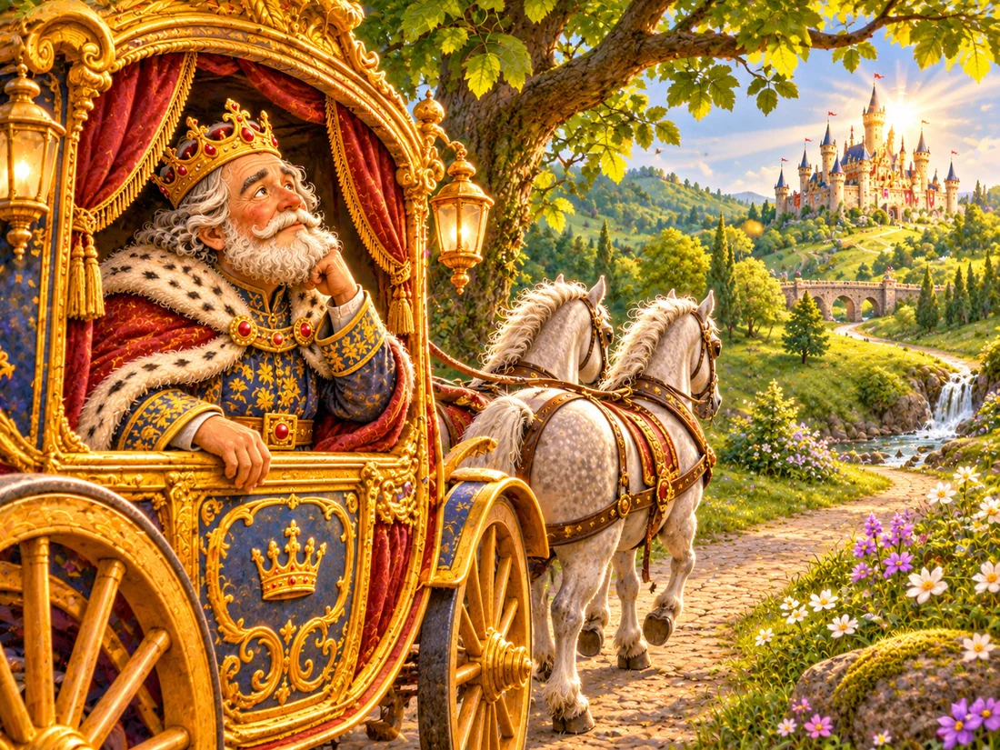
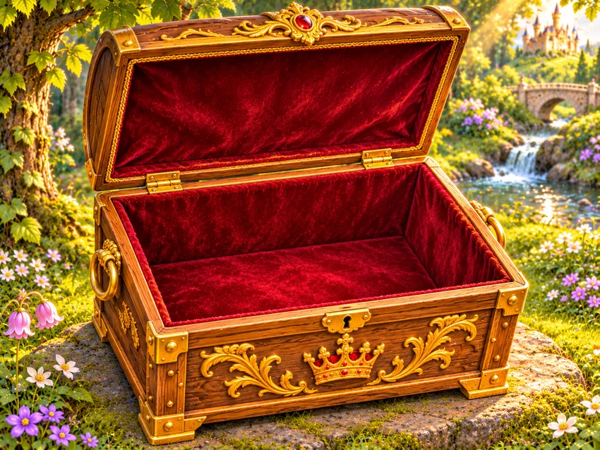

Szene 12
Rückreise

Auf dem Rückweg waren die Kisten mit dem roten Samt im Inneren leer. Eine war schmutzig vom Schlamm.
Niemand wollte die Kiste sauber machen.
Kurze Zeit später kam der König in seinem Palast an. Der ganze Hof wartete schon auf den Schatz.
Wahr oder falsch?
👍 bedeutet wahr. 👎 bedeutet falsch. Zieh einen Daumen aus der Kiste auf eine Aussage. Du kannst auch erst den Daumen und dann die Aussage antippen.
